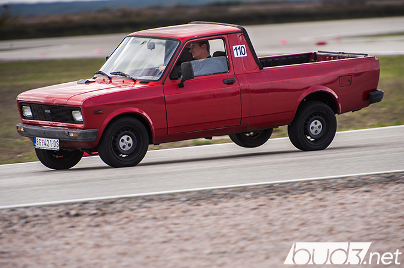

BUDI U TOKU


PRETRAGA

Napokon smo završili video sa poslednjeg Track Day-a iz 2017., pa kako bismo proslavili ovo porinuće, objavljujemo datume za prva tri celodnevna Track Day-a u 2018. godini.
Kalendar u ruke i pišite – prvi april (01.04.), trinaesti maj (13.05.) i sedamnaesti jun (17.06.).
Uskoro će biti postavljen i mini-sajt za Track Day na kome će biti sve informacije i vremena u potpunosti, kao i neke novine za sezonu u 2018. godini. Do tada – sportski pozdrav!
Kalendar u ruke i pišite – prvi april (01.04.), trinaesti maj (13.05.) i sedamnaesti jun (17.06.).
Uskoro će biti postavljen i mini-sajt za Track Day na kome će biti sve informacije i vremena u potpunosti, kao i neke novine za sezonu u 2018. godini. Do tada – sportski pozdrav!